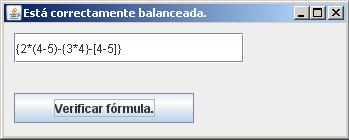

- Estructuras dinámicas: Listas tipo Pila - Problema de aplicación |
Hasta ahora hemos visto como desarrollar los algoritmos para administrar una lista tipo Pila, hemos visto que hay bastante complejidad en el manejo de punteros pero todo esto acarrea ventajas en la solución de problemas que requieren una estructura de tipo Pila.
Planteo del problema:
Este práctico tiene por objetivo mostrar la importancia de las pilas en las Ciencias de la Computación y más precisamente en la programación de software de bajo nivel.
Todo compilador o intérprete de un lenguaje tiene un módulo dedicado a analizar si una expresión está correctamente codificada, es decir que los paréntesis estén abiertos y cerrados en un orden lógico y bien balanceados.
Se debe desarrollar una clase que tenga las siguientes responsabilidades (clase Formula):
- Ingresar una fórmula que contenga paréntesis, corchetes y llaves.
- Validar que los ( ) [] y {} estén correctamente balanceados.
Para la solución de este problema la clase formula tendrá un atributo de la clase Pila.
Veamos como nos puede ayudar el empleo de una pila para solucionar este problema.
Primero cargaremos la fórmula en un JTextField.
Ejemplo de fórmula: (2+[3-12]*{8/3})
El algoritmo de validación es el siguiente:
Analizamos caracter a caracter la presencia de los paréntesis, corchetes y llaves.
Si vienen símbolos de apertura los almacenamos en la pila.
Si vienen símbolos de cerrado extraemos de la pila y verificamos si está el mismo símbolo pero de apertura: en caso negativo podemos inferir que la fórmula no está correctamente balanceada.
Si al finalizar el análisis del último caracter de la fórmula la pila está vacía podemos concluir que está correctamente balanceada.
Ejemplos de fórmulas no balanceadas:
}(2+[3-12]*{8/3})
Incorrecta: llega una } de cerrado y la pila está vacía.
{[2+4}]
Incorrecta: llega una llave } y en el tope de la pila hay un corchete [.
{[2+4]
Incorrecta: al finalizar el análisis del último caracter en la pila queda pendiente una llave {.

public class Pila {
class Nodo {
char simbolo;
Nodo sig;
}
private Nodo raiz;
Pila () {
raiz=null;
}
public void insertar(char x) {
Nodo nuevo;
nuevo = new Nodo();
nuevo.simbolo = x;
if (raiz==null)
{
nuevo.sig = null;
raiz = nuevo;
}
else
{
nuevo.sig = raiz;
raiz = nuevo;
}
}
public char extraer ()
{
if (raiz!=null)
{
char informacion = raiz.simbolo;
raiz = raiz.sig;
return informacion;
}
else
{
return Character.MAX_VALUE;
}
}
public boolean vacia() {
if (raiz==null) {
return true;
} else {
return false;
}
}
}
import javax.swing.*;
import java.awt.event.*;
public class Formula extends JFrame implements ActionListener {
private JTextField tf1;
private JButton boton1;
public Formula() {
setLayout(null);
tf1=new JTextField("{2*(4-5)-{3*4}-[4-5]}");
tf1.setBounds(10,10,230,30);
add(tf1);
boton1=new JButton("Verificar fórmula.");
boton1.setBounds(10,70,180,30);
add(boton1);
boton1.addActionListener(this);
}
public void actionPerformed(ActionEvent e) {
if (e.getSource()==boton1) {
if (balanceada()) {
setTitle("Está correctamente balanceada.");
} else {
setTitle("No está correctamente balanceada.");
}
}
}
public boolean balanceada() {
Pila pila1;
pila1 = new Pila ();
String cadena=tf1.getText();
for (int f = 0 ; f < cadena.length() ; f++)
{
if (cadena.charAt(f) == '(' || cadena.charAt(f) == '[' || cadena.charAt(f) == '{') {
pila1.insertar(cadena.charAt(f));
} else {
if (cadena.charAt(f)==')') {
if (pila1.extraer()!='(') {
return false;
}
} else {
if (cadena.charAt(f)==']') {
if (pila1.extraer()!='[') {
return false;
}
} else {
if (cadena.charAt(f)=='}') {
if (pila1.extraer()!='{') {
return false;
}
}
}
}
}
}
if (pila1.vacia()) {
return true;
} else {
return false;
}
}
public static void main(String[] ar) {
Formula formula1=new Formula();
formula1.setBounds(0,0,350,140);
formula1.setVisible(true);
}
}
Primero declaramos y definimos la clase Pila. Almacenamos en cada nodo un caracter y llamamos al campo de información símbolo.
No es necesario implementar los métodos imprimir, cantidad, etc. Porque no se requieren para este problema.
La clase Formula tiene como atributos:
private JTextField tf1;
private JButton boton1;
En el constructor creamos los dos objetos y los ubicamos:
setLayout(null);
tf1=new JTextField("{2*(4-5)-{3*4}-[4-5]}");
tf1.setBounds(10,10,230,30);
add(tf1);
boton1=new JButton("Verificar fórmula.");
boton1.setBounds(10,70,180,30);
add(boton1);
boton1.addActionListener(this);
En el método actionPerformed llamamos al método balanceada que debe retornar si la fórmula están correctos los parentesis, corchetes y llaves:
if (e.getSource()==boton1) {
if (balanceada()) {
setTitle("Está correctamente balanceada.");
} else {
setTitle("No está correctamente balanceada.");
}
}
El método más importante es el balanceada.
En este analizamos la fórmula para verificar si está correctamente balanceada.
En este método es donde está gran parte del algoritmo de este problema. Retorna true en caso de ser
correcta y false en caso contrario.
Definimos una pila y extraemos el contenido del JTextField:
Pila pila1;
pila1 = new Pila ();
String cadena=tf1.getText();
El for se repite tantas veces como caracteres tenga el JTextField.
Se deben procesar sólo los símbolos ( [ { y ) ] }.
Si el símbolo es un ( [ { de apertura procedemos a cargarlo en la pila:
if (cadena.charAt(f) == '(' || cadena.charAt(f) == '[' || cadena.charAt(f) == '{') {
pila1.insertar(cadena.charAt(f));
En caso de ser un ) cerrado debemos extraer un carácter de la pila y verificar si no coincide con el paréntesis de apertura ( la fórmula está incorrecta:
if (cadena.charAt(f)==')') {
if (pila1.extraer()!='(') {
return false;
}
El mismo proceso es para los símbolos ] }.
Al finalizar el análisis de toda la cadena si la pila está vacía podemos afirmar que la fórmula está correctamente balanceada, en caso contrario quiere decir que faltan símbolos de cerrado y es incorrecta:
if (pila1.vacia()) {
return true;
} else {
return false;
}
Es importante entender que la clase Formula utiliza un objeto de la clase Pila para resolver el algoritmo de verificar el balanceo de la fórmula, pero no accede directamente a los nodos de la lista.